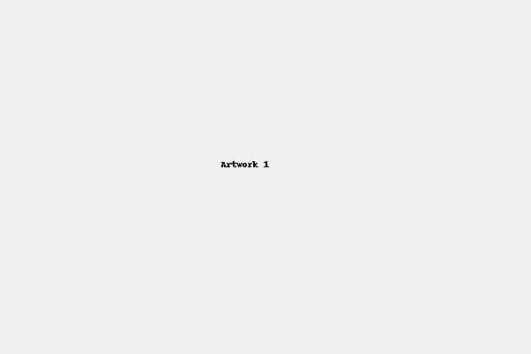

ARTISTIC JOURNEY

2023 – A turning point: this piece merged symmetry with feeling.
2017 – Arrived in Paris, where drawing became a necessity, not a hobby.
2022 – Collaboration with Paul Smith. A public moment from a private practice.